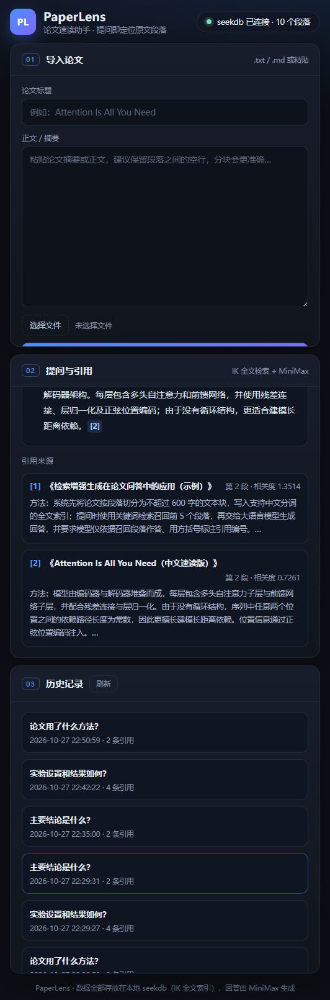
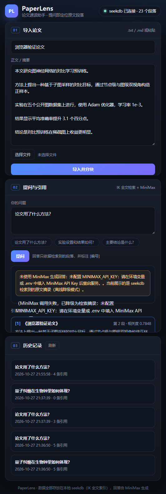
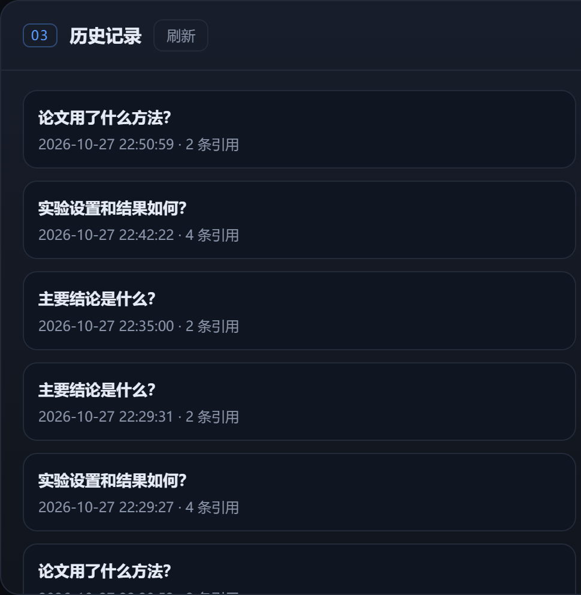

导入论文后自动分块写入 seekdb，用自然语言提问即可检索相关段落， 并获得带原文引用编号的回答；问答历史持久保存。面向学生与科研人员的真实阅读痛点： 组会前快速定位「方法 / 实验 / 结论」，不用来回翻页。
长文里找一个段落要来回跳转，PaperLens 用一次提问直接定位原文并给出引用编号。
每条结论都标注 [n]，点击引用卡片可以展开对应原文段落，避免模型「编造」。
所有论文分块与问答历史都保存在 seekdb，刷新、重启后依然可查。



建表即建 FULLTEXT INDEX ... WITH PARSER ik；检索全部下推为 MATCH ... AGAINST，应用内存不做检索或向量计算。
OpenAI 兼容接口调用 MiniMax-M3.1-Flash；提示词要求只依据给定段落回答、标注引用、无法回答时明确说明。
seekdb 不可用返回 503 与排查提示；缺少 API Key 或调用失败时降级为检索摘录，并明确标注 degraded。
本地运行：docker start seekdb → pip install -r requirements.txt →
python -m uvicorn app.main:app --port 8000，打开 http://127.0.0.1:8000。
源码：github.com/iamSttt/powercontext（目录 qoder/paperlens）。